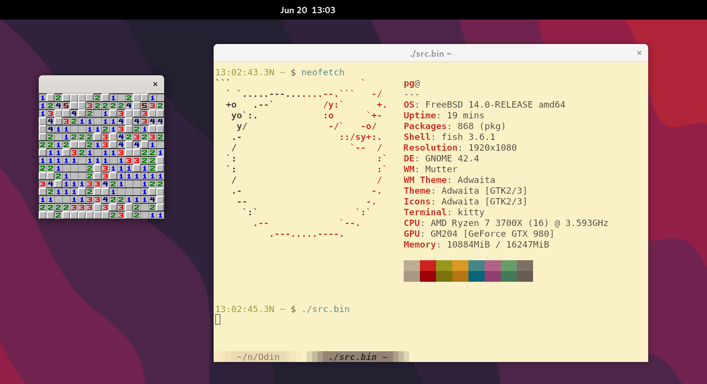
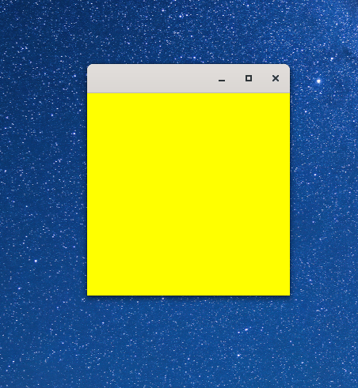
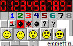
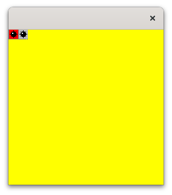
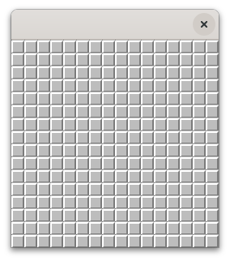

Philippe Gaultier
Philippe Gaultier
Philippe Gaultier
Philippe Gaultier
Published on 2024-06-20. Last modified on 2026-03-04.
Discussions: Hacker News, /r/programming
In a previous article I've done the 'Hello, world!' of GUIs in assembly: A black window with a white text, using X11 without any libraries, just talking directly over a socket.
In a later article I've done the same with Wayland in C, displaying a static image.
I showed that this is not complex and results in a very lean and small application.
Recently, I stumbled upon this Hacker News post:
Microsoft's official Minesweeper app has ads, pay-to-win, and is hundreds of MBs
And I thought it would be fun to make with the same principles a full-fledged GUI application: the cult video game Minesweeper.
Will it be hundred of megabytes when we finish? How much work is it really? Can a hobbyist make this in a few hours?


Press enter to reset and press any mouse button to uncover the cell under the mouse cursor.
Here is a Youtube link in case the video does not play (I tried lots of things so that it plays on iOS to no avail).
The result is a ~300 KiB statically linked executable, that requires no libraries, and uses a constant ~1 MiB of resident heap memory (allocated at the start, to hold the assets). That's roughly a thousand times smaller in size than Microsoft's. And it only is a few hundred lines of code.
The advantage of this approach is that the application is tiny and stand-alone: statically linked with the few bits of libC it uses (and that's it), it can be trivially compiled on every Unix, and copied around, and it will work on every machine (with the same OS/architecture that is). Even on ancient Linuxes from 20 years ago.
I remember playing this game as a kid (must have been on Windows 98). It was a lot of fun! I don't exactly remember the rules though so it's a best approximation.
If you spot an error, please open a Github issue! And the source code repository for the game is here.
The 11th version of the X protocol was born in 1987 and has not changed since. Since it predates GPUs by a decade or so, its model does not really fit the hardware of today. Still, it's everywhere. Any Unix has a X server, even macOS with XQuartz, and now Windows supports running GUI Linux applications inside WSL! X11 has never been so ubiquitous. The protocol is relatively simple and the entry bar is low: we only need to create a socket and we're off the races. And for 2D applications, there's no need to be a Vulkan wizard or even interact with the GPU. Hell, it will work even without any GPU!
Everyone writing GUIs these days use a giant pile of libraries, starting with the overly complicated venerable libX11 and libxcb libraries, to Qt and SDL.
Here are the steps we need to take:
And that's it. Spoiler alert: every step is 1-3 X11 messages that we need to craft and send. The only messages that we receive are the keyboard and mouse events. It's really not much at all!
We will implement this in the Odin programming language which I really enjoy. But if you want to follow along with C or anything really, go for it. All we need is to be able to open a Unix socket, send and receive data on it, and load an image into memory. We will use PNG for that, since Odin has in its standard library support for PNGs, but we could also very easily use a simple format like PPM (like I did in the linked Wayland article) that is trivial to parse. Since Odin has support for both in its standard library, it does not really matter, and I stuck with PNG since it's more space-efficient.
Finally, if you're into writing X11 applications even with libraries, lots of things in X11 are undocumented or underdocumented, and this article can be a good learning resource. As a bonus, you can also follow along with pure Wayland, using my previous Wayland article.
Or perhaps you simply enjoy, like me, peeking behind the curtain to understand the magician's tricks. It almost always ends up with: "That's it? That's all there is to it?".
In previous articles, we connected to the X server without any authentication.
Let's be a bit more refined: we now also support the X authentication protocol.
That's because when running under Wayland with XWayland in some desktop environments like Gnome, we have to use authentication.
This requires our application to read a 16 bytes long token that's present in a file in the user's home directory, and include it in the handshake we send to the X server.
This mechanism is called MIT-MAGIC-COOKIE-1.
The catch is that this file contains multiple tokens for various authentication mechanisms, and network hosts. Remember, X11 is designed to work over the network. However we only care here about the entry for localhost.
So we need to parse a little bit. It's basically what libXau does. From its docs:
PlaintextThe .Xauthority file is a binary file consisting of a sequence of entries in the following format: 2 bytes Family value (second byte is as in protocol HOST) 2 bytes address length (always MSB first) A bytes host address (as in protocol HOST) 2 bytes display "number" length (always MSB first) S bytes display "number" string 2 bytes name length (always MSB first) N bytes authorization name string 2 bytes data length (always MSB first) D bytes authorization data string
First let's define some types and constants:
OdinAUTH_ENTRY_FAMILY_LOCAL: u16 : 1 AUTH_ENTRY_MAGIC_COOKIE: string : "MIT-MAGIC-COOKIE-1" AuthToken :: [16]u8 AuthEntry :: struct { family: u16, auth_name: []u8, auth_data: []u8, }
We only define fields we are interested in.
Let's now parse each entry accordingly:
Odinread_x11_auth_entry :: proc(buffer: ^bytes.Buffer) -> (AuthEntry, bool) { entry := AuthEntry{} { n_read, err := bytes.buffer_read(buffer, mem.ptr_to_bytes(&entry.family)) if err == .EOF {return {}, false} assert(err == .None) assert(n_read == size_of(entry.family)) } address_len: u16 = 0 { n_read, err := bytes.buffer_read(buffer, mem.ptr_to_bytes(&address_len)) assert(err == .None) address_len = bits.byte_swap(address_len) assert(n_read == size_of(address_len)) } address := make([]u8, address_len) { n_read, err := bytes.buffer_read(buffer, address) assert(err == .None) assert(n_read == cast(int)address_len) } display_number_len: u16 = 0 { n_read, err := bytes.buffer_read(buffer, mem.ptr_to_bytes(&display_number_len)) assert(err == .None) display_number_len = bits.byte_swap(display_number_len) assert(n_read == size_of(display_number_len)) } display_number := make([]u8, display_number_len) { n_read, err := bytes.buffer_read(buffer, display_number) assert(err == .None) assert(n_read == cast(int)display_number_len) } auth_name_len: u16 = 0 { n_read, err := bytes.buffer_read(buffer, mem.ptr_to_bytes(&auth_name_len)) assert(err == .None) auth_name_len = bits.byte_swap(auth_name_len) assert(n_read == size_of(auth_name_len)) } entry.auth_name = make([]u8, auth_name_len) { n_read, err := bytes.buffer_read(buffer, entry.auth_name) assert(err == .None) assert(n_read == cast(int)auth_name_len) } auth_data_len: u16 = 0 { n_read, err := bytes.buffer_read(buffer, mem.ptr_to_bytes(&auth_data_len)) assert(err == .None) auth_data_len = bits.byte_swap(auth_data_len) assert(n_read == size_of(auth_data_len)) } entry.auth_data = make([]u8, auth_data_len) { n_read, err := bytes.buffer_read(buffer, entry.auth_data) assert(err == .None) assert(n_read == cast(int)auth_data_len) } return entry, true }
Now we can sift through the different entries in the file to find the one we are after:
Odinload_x11_auth_token :: proc(allocator := context.allocator) -> (token: AuthToken, ok: bool) { context.allocator = allocator defer free_all(allocator) filename_env := os.get_env("XAUTHORITY") filename := len(filename_env) != 0 \ ? filename_env \ : filepath.join([]string{os.get_env("HOME"), ".Xauthority"}) data := os.read_entire_file_from_filename(filename) or_return buffer := bytes.Buffer{} bytes.buffer_init(&buffer, data[:]) for { auth_entry := read_x11_auth_entry(&buffer) or_break if auth_entry.family == AUTH_ENTRY_FAMILY_LOCAL && slice.equal(auth_entry.auth_name, transmute([]u8)AUTH_ENTRY_MAGIC_COOKIE) && len(auth_entry.auth_data) == size_of(AuthToken) { mem.copy_non_overlapping( raw_data(&token), raw_data(auth_entry.auth_data), size_of(AuthToken), ) return token, true } } // Did not find a fitting token. return {}, false }
Odin has a nice shorthand to return early on errors: or_return, which is the equivalent of ? in Rust or try in Zig. Same thing with or_break.
And we use it in this manner in main:
Odinmain :: proc() { auth_token, _ := load_x11_auth_token(context.temp_allocator) }
If we did not find a fitting token, no matter, we will simply carry on with an empty one.
One interesting thing: in Odin, similarly to Zig, allocators are passed to functions wishing to allocate memory. Contrary to Zig though, Odin has a mechanism to make that less tedious (and more implicit as a result) by essentially passing the allocator as the last function argument which is optional.
Odin is nice enough to also provide us two allocators that we can use right away: A general purpose allocator, and a temporary allocator that uses an arena.
Since authentication entries can be large, we have to allocate - the stack is only so big. It would be unfortunate to stack overflow because a hostname is a tiny bit too long in this file.
Some readers have pointed out that it is likely it would all fit on the stack here, but this was also a perfect opportunity to describe Odin's approach to memory management.
However, we do not want to retain the parsed entries from the file in memory after finding the 16 bytes token, so we defer free_all(allocator). This is much better than going through each entry and freeing individually each field. We simply free the whole arena in one swoop (but the backing memory remains around to be reused later).
Furthermore, using this arena places an upper bound (a few MiBs) on the allocations we can do. So if one entry in the file is huge, or malformed, we verifyingly cannot allocate many GiBs of memory. This is good news, because otherwise, the OS will start swapping like crazy and start killing random programs. In my experience it usually kills the window/desktop manager which kills all open windows. Very efficient from the OS perspective, and awful from the user perspective. So it's always good to place an upper bound on all resources including heap memory usage of your program.
All in all I find Odin's approach very elegant. I usually want the ability to use a different allocator in a given function, but also if I don't care, it will do the right thing and use the standard allocator.
This part is almost exactly the same as the first linked article so I'll speed run this.
First we open a UNIX domain socket:
Odinconnect_x11_socket :: proc() -> os.Socket { SockaddrUn :: struct #packed { sa_family: os.ADDRESS_FAMILY, sa_data: [108]u8, } socket, err := os.socket(os.AF_UNIX, os.SOCK_STREAM, 0) assert(err == os.ERROR_NONE) possible_socket_paths := [2]string{"/tmp/.X11-unix/X0", "/tmp/.X11-unix/X1"} for &socket_path in possible_socket_paths { addr := SockaddrUn { sa_family = cast(u16)os.AF_UNIX, } mem.copy_non_overlapping(&addr.sa_data, raw_data(socket_path), len(socket_path)) err = os.connect(socket, cast(^os.SOCKADDR)&addr, size_of(addr)) if (err == os.ERROR_NONE) {return socket} } os.exit(1) }
We try a few possible paths for the socket, that can vary a bit from distribution to distribution.
We now can send the handshake, and receive general information from the server. Let's define some structs for that per the X11 protocol:
OdinScreen :: struct #packed { id: u32, colormap: u32, white: u32, black: u32, input_mask: u32, width: u16, height: u16, width_mm: u16, height_mm: u16, maps_min: u16, maps_max: u16, root_visual_id: u32, backing_store: u8, save_unders: u8, root_depth: u8, depths_count: u8, } ConnectionInformation :: struct { root_screen: Screen, resource_id_base: u32, resource_id_mask: u32, }
The structs are #packed to match the network protocol format, otherwise the compiler may insert padding between fields.
One thing to know about X11: Everything we send has to be padded to a multiple of 4 bytes. We define a helper to do that by using the formula ((i32)x + 3) & -4 along with a unit test for good measure:
Odinround_up_4 :: #force_inline proc(x: u32) -> u32 { mask: i32 = -4 return transmute(u32)((transmute(i32)x + 3) & mask) } @(test) test_round_up_4 :: proc(_: ^testing.T) { assert(round_up_4(0) == 0) assert(round_up_4(1) == 4) assert(round_up_4(2) == 4) assert(round_up_4(3) == 4) assert(round_up_4(4) == 4) assert(round_up_4(5) == 8) assert(round_up_4(6) == 8) assert(round_up_4(7) == 8) assert(round_up_4(8) == 8) }
We can now send the handshake with the authentication token inside. We leverage the writev system call to send multiple separate buffers of different lengths in one call.
We skip over most of the information the server sends us, since we only are after a few fields:
Odinx11_handshake :: proc(socket: os.Socket, auth_token: ^AuthToken) -> ConnectionInformation { Request :: struct #packed { endianness: u8, pad1: u8, major_version: u16, minor_version: u16, authorization_len: u16, authorization_data_len: u16, pad2: u16, } request := Request { endianness = 'l', major_version = 11, authorization_len = len(AUTH_ENTRY_MAGIC_COOKIE), authorization_data_len = size_of(AuthToken), } { padding := [2]u8{0, 0} n_sent, err := linux.writev( cast(linux.Fd)socket, []linux.IO_Vec { {base = &request, len = size_of(Request)}, {base = raw_data(AUTH_ENTRY_MAGIC_COOKIE), len = len(AUTH_ENTRY_MAGIC_COOKIE)}, {base = raw_data(padding[:]), len = len(padding)}, {base = raw_data(auth_token[:]), len = len(auth_token)}, }, ) assert(err == .NONE) assert( n_sent == size_of(Request) + len(AUTH_ENTRY_MAGIC_COOKIE) + len(padding) + len(auth_token), ) } StaticResponse :: struct #packed { success: u8, pad1: u8, major_version: u16, minor_version: u16, length: u16, } static_response := StaticResponse{} { n_recv, err := os.recv(socket, mem.ptr_to_bytes(&static_response), 0) assert(err == os.ERROR_NONE) assert(n_recv == size_of(StaticResponse)) assert(static_response.success == 1) } recv_buf: [1 << 15]u8 = {} { assert(len(recv_buf) >= cast(u32)static_response.length * 4) n_recv, err := os.recv(socket, recv_buf[:], 0) assert(err == os.ERROR_NONE) assert(n_recv == cast(u32)static_response.length * 4) } DynamicResponse :: struct #packed { release_number: u32, resource_id_base: u32, resource_id_mask: u32, motion_buffer_size: u32, vendor_length: u16, maximum_request_length: u16, screens_in_root_count: u8, formats_count: u8, image_byte_order: u8, bitmap_format_bit_order: u8, bitmap_format_scanline_unit: u8, bitmap_format_scanline_pad: u8, min_keycode: u8, max_keycode: u8, pad2: u32, } read_buffer := bytes.Buffer{} bytes.buffer_init(&read_buffer, recv_buf[:]) dynamic_response := DynamicResponse{} { n_read, err := bytes.buffer_read(&read_buffer, mem.ptr_to_bytes(&dynamic_response)) assert(err == .None) assert(n_read == size_of(DynamicResponse)) } // Skip over the vendor information. bytes.buffer_next(&read_buffer, cast(int)round_up_4(cast(u32)dynamic_response.vendor_length)) // Skip over the format information (each 8 bytes long). bytes.buffer_next(&read_buffer, 8 * cast(int)dynamic_response.formats_count) screen := Screen{} { n_read, err := bytes.buffer_read(&read_buffer, mem.ptr_to_bytes(&screen)) assert(err == .None) assert(n_read == size_of(screen)) } return( ConnectionInformation { resource_id_base = dynamic_response.resource_id_base, resource_id_mask = dynamic_response.resource_id_mask, root_screen = screen, } \ ) }
Our main now becomes:
Odinmain :: proc() { auth_token, _ := load_x11_auth_token(context.temp_allocator) socket := connect_x11_socket() connection_information := x11_handshake(socket, &auth_token) }
The next step is to create a graphical context. When creating a new entity, we generate an id for it, and send that in the create request. Afterwards, we can refer to the entity by this id:
Odinnext_x11_id :: proc(current_id: u32, info: ConnectionInformation) -> u32 { return 1 + ((info.resource_id_mask & (current_id)) | info.resource_id_base) }
Time to create a graphical context:
Odinx11_create_graphical_context :: proc(socket: os.Socket, gc_id: u32, root_id: u32) { opcode: u8 : 55 FLAG_GC_BG: u32 : 8 BITMASK: u32 : FLAG_GC_BG VALUE1: u32 : 0x00_00_ff_00 Request :: struct #packed { opcode: u8, pad1: u8, length: u16, id: u32, drawable: u32, bitmask: u32, value1: u32, } request := Request { opcode = opcode, length = 5, id = gc_id, drawable = root_id, bitmask = BITMASK, value1 = VALUE1, } { n_sent, err := os.send(socket, mem.ptr_to_bytes(&request), 0) assert(err == os.ERROR_NONE) assert(n_sent == size_of(Request)) } }
Finally we create a window. We subscribe to a few events as well:
Exposure: when our window becomes visibleKEY_PRESS: when a keyboard key is pressedKEY_RELEASE: when a keyboard key is releasedBUTTON_PRESS: when a mouse button is pressedBUTTON_RELEASE: when a mouse button is releasedWe also pick an arbitrary background color, yellow. It does not matter because we will always cover every part of the window with our assets.
Odinx11_create_window :: proc( socket: os.Socket, window_id: u32, parent_id: u32, x: u16, y: u16, width: u16, height: u16, root_visual_id: u32, ) { FLAG_WIN_BG_PIXEL: u32 : 2 FLAG_WIN_EVENT: u32 : 0x800 FLAG_COUNT: u16 : 2 EVENT_FLAG_EXPOSURE: u32 = 0x80_00 EVENT_FLAG_KEY_PRESS: u32 = 0x1 EVENT_FLAG_KEY_RELEASE: u32 = 0x2 EVENT_FLAG_BUTTON_PRESS: u32 = 0x4 EVENT_FLAG_BUTTON_RELEASE: u32 = 0x8 flags: u32 : FLAG_WIN_BG_PIXEL | FLAG_WIN_EVENT depth: u8 : 24 border_width: u16 : 0 CLASS_INPUT_OUTPUT: u16 : 1 opcode: u8 : 1 BACKGROUND_PIXEL_COLOR: u32 : 0x00_ff_ff_00 Request :: struct #packed { opcode: u8, depth: u8, request_length: u16, window_id: u32, parent_id: u32, x: u16, y: u16, width: u16, height: u16, border_width: u16, class: u16, root_visual_id: u32, bitmask: u32, value1: u32, value2: u32, } request := Request { opcode = opcode, depth = depth, request_length = 8 + FLAG_COUNT, window_id = window_id, parent_id = parent_id, x = x, y = y, width = width, height = height, border_width = border_width, class = CLASS_INPUT_OUTPUT, root_visual_id = root_visual_id, bitmask = flags, value1 = BACKGROUND_PIXEL_COLOR, value2 = EVENT_FLAG_EXPOSURE | EVENT_FLAG_BUTTON_RELEASE | EVENT_FLAG_BUTTON_PRESS | EVENT_FLAG_KEY_PRESS | EVENT_FLAG_KEY_RELEASE, } { n_sent, err := os.send(socket, mem.ptr_to_bytes(&request), 0) assert(err == os.ERROR_NONE) assert(n_sent == size_of(Request)) } }
We decide that our game will have 16 rows and 16 columns, and each asset is 16x16 pixels.
main is now:
OdinENTITIES_ROW_COUNT :: 16 ENTITIES_COLUMN_COUNT :: 16 ENTITIES_WIDTH :: 16 ENTITIES_HEIGHT :: 16 main :: proc() { auth_token, _ := load_x11_auth_token(context.temp_allocator) socket := connect_x11_socket() connection_information := x11_handshake(socket, &auth_token) gc_id := next_x11_id(0, connection_information) x11_create_graphical_context(socket, gc_id, connection_information.root_screen.id) window_id := next_x11_id(gc_id, connection_information) x11_create_window( socket, window_id, connection_information.root_screen.id, 200, 200, ENTITIES_COLUMN_COUNT * ENTITIES_WIDTH, ENTITIES_ROW_COUNT * ENTITIES_HEIGHT, connection_information.root_screen.root_visual_id, ) }
Note that the window dimensions are a hint, they might now be respected, for example in a tiling window manager. We do not handle this case here since the assets are fixed size.
If you have followed along, you will now see... nothing. That's because we need to tell X11 to show our window with the map_window call:
Odinx11_map_window :: proc(socket: os.Socket, window_id: u32) { opcode: u8 : 8 Request :: struct #packed { opcode: u8, pad1: u8, request_length: u16, window_id: u32, } request := Request { opcode = opcode, request_length = 2, window_id = window_id, } { n_sent, err := os.send(socket, mem.ptr_to_bytes(&request), 0) assert(err == os.ERROR_NONE) assert(n_sent == size_of(Request)) } }
We now see:

Time to start programming the game itself!
What's a game without nice looking pictures stolen from somewhere on the internet ?
Here is our sprite, the one image containing all our assets:

Odin has a nice feature to embed the image file in our executable which makes redistribution a breeze and startup a bit faster, so we'll do that:
Odinpng_data := #load("sprite.png") sprite, err := png.load_from_bytes(png_data, {}) assert(err == nil)
Now here is the catch: The X11 image format is different from the one in the sprite so we have to swap the bytes around:
Odinsprite_data := make([]u8, sprite.height * sprite.width * 4) // Convert the image format from the sprite (RGB) into the X11 image format (BGRX). for i := 0; i < sprite.height * sprite.width - 3; i += 1 { sprite_data[i * 4 + 0] = sprite.pixels.buf[i * 3 + 2] // R -> B sprite_data[i * 4 + 1] = sprite.pixels.buf[i * 3 + 1] // G -> G sprite_data[i * 4 + 2] = sprite.pixels.buf[i * 3 + 0] // B -> R sprite_data[i * 4 + 3] = 0 // pad }
The A component is actually unused since we do not have transparency.
Now that our image is in (client) memory, how to make it available to the server? Which, again, in the X11 model, might be running on a totally different machine across the world!
X11 has 3 useful calls for images: CreatePixmap and PutImage. A Pixmap is an off-screen image buffer. PutImage uploads image data either to a pixmap or to the window directly (a 'drawable' in X11 parlance). CopyArea copies one rectangle in one drawable to another drawable.
In my humble opinion, these are complete misnomers. CreatePixmap should have been called CreateOffscreenImageBuffer and PutImage should have been UploadImageData. CopyArea: you're fine buddy, carry on.
We cannot simply use PutImage here since that would show the whole sprite on the screen (there are no fields to specify that only part of the image should be displayed). We could show only parts of it, with separate PutImage calls for each entity, but that would mean uploading the image data to the server each time.
What we want is to upload the image data once, off-screen, with one PutImage call, and then copy parts of it onto the window. Here is the dance we need to do:
CreatePixmapPutImage to upload the image data to the pixmap - at that point nothing is shown on the window, everything is still off-screenCopyArea call which copies parts of the pixmap onto the window - now it's visible!The X server can actually upload the image data to the GPU on a PutImage call (this is implementation dependent). After that, CopyArea calls can be translated by the X server to GPU commands to copy the image data from one GPU buffer to another: that's really performant! The image data is only uploaded once to the GPU and then resides there for the remainder of the program.
Unfortunately, the X standard does not enforce that (it says: "may or may not [...]"), but that's a useful model to have in mind.
Another useful model is to think of what happens when the X server is running across the network: We only want to send the image data once because that's time-consuming, and afterwards issue cheap CopyArea commands that are only a few bytes each.
Ok, let's implement that then:
Odinx11_create_pixmap :: proc( socket: os.Socket, window_id: u32, pixmap_id: u32, width: u16, height: u16, depth: u8, ) { opcode: u8 : 53 Request :: struct #packed { opcode: u8, depth: u8, request_length: u16, pixmap_id: u32, drawable_id: u32, width: u16, height: u16, } request := Request { opcode = opcode, depth = depth, request_length = 4, pixmap_id = pixmap_id, drawable_id = window_id, width = width, height = height, } { n_sent, err := os.send(socket, mem.ptr_to_bytes(&request), 0) assert(err == os.ERROR_NONE) assert(n_sent == size_of(Request)) } } x11_put_image :: proc( socket: os.Socket, drawable_id: u32, gc_id: u32, width: u16, height: u16, dst_x: u16, dst_y: u16, depth: u8, data: []u8, ) { opcode: u8 : 72 Request :: struct #packed { opcode: u8, format: u8, request_length: u16, drawable_id: u32, gc_id: u32, width: u16, height: u16, dst_x: u16, dst_y: u16, left_pad: u8, depth: u8, pad1: u16, } data_length_padded := round_up_4(cast(u32)len(data)) request := Request { opcode = opcode, format = 2, // ZPixmap request_length = cast(u16)(6 + data_length_padded / 4), drawable_id = drawable_id, gc_id = gc_id, width = width, height = height, dst_x = dst_x, dst_y = dst_y, depth = depth, } { padding_len := data_length_padded - cast(u32)len(data) n_sent, err := linux.writev( cast(linux.Fd)socket, []linux.IO_Vec { {base = &request, len = size_of(Request)}, {base = raw_data(data), len = len(data)}, {base = raw_data(data), len = cast(uint)padding_len}, }, ) assert(err == .NONE) assert(n_sent == size_of(Request) + len(data) + cast(int)padding_len) } } x11_copy_area :: proc( socket: os.Socket, src_id: u32, dst_id: u32, gc_id: u32, src_x: u16, src_y: u16, dst_x: u16, dst_y: u16, width: u16, height: u16, ) { opcode: u8 : 62 Request :: struct #packed { opcode: u8, pad1: u8, request_length: u16, src_id: u32, dst_id: u32, gc_id: u32, src_x: u16, src_y: u16, dst_x: u16, dst_y: u16, width: u16, height: u16, } request := Request { opcode = opcode, request_length = 7, src_id = src_id, dst_id = dst_id, gc_id = gc_id, src_x = src_x, src_y = src_y, dst_x = dst_x, dst_y = dst_y, width = width, height = height, } { n_sent, err := os.send(socket, mem.ptr_to_bytes(&request), 0) assert(err == os.ERROR_NONE) assert(n_sent == size_of(Request)) } }
Let's try in main:
Odinimg_depth: u8 = 24 pixmap_id := next_x11_id(window_id, connection_information) x11_create_pixmap( socket, window_id, pixmap_id, cast(u16)sprite.width, cast(u16)sprite.height, img_depth, ) x11_put_image( socket, pixmap_id, gc_id, sprite_width, sprite_height, 0, 0, img_depth, sprite_data, ) // Let's render two different assets: an exploded mine and an idle mine. x11_copy_area( socket, pixmap_id, window_id, gc_id, 32, // X coordinate on the sprite sheet. 40, // Y coordinate on the sprite sheet. 0, // X coordinate on the window. 0, // Y coordinate on the window. 16, // Width. 16, // Height. ) x11_copy_area( socket, pixmap_id, window_id, gc_id, 64, 40, 16, 0, 16, 16, )
Result:

We are now ready to focus on the game entities.
We have a few different entities we want to show, each is a 16x16 section of the sprite sheet. Let's define their coordinates to be readable:
OdinPosition :: struct { x: u16, y: u16, } Entity_kind :: enum { Covered, Uncovered_0, Uncovered_1, Uncovered_2, Uncovered_3, Uncovered_4, Uncovered_5, Uncovered_6, Uncovered_7, Uncovered_8, Mine_exploded, Mine_idle, } ASSET_COORDINATES: [Entity_kind]Position = { .Uncovered_0 = {x = 0 * 16, y = 22}, .Uncovered_1 = {x = 1 * 16, y = 22}, .Uncovered_2 = {x = 2 * 16, y = 22}, .Uncovered_3 = {x = 3 * 16, y = 22}, .Uncovered_4 = {x = 4 * 16, y = 22}, .Uncovered_5 = {x = 5 * 16, y = 22}, .Uncovered_6 = {x = 6 * 16, y = 22}, .Uncovered_7 = {x = 7 * 16, y = 22}, .Uncovered_8 = {x = 8 * 16, y = 22}, .Covered = {x = 0, y = 38}, .Mine_exploded = {x = 32, y = 40}, .Mine_idle = {x = 64, y = 40}, }
And we'll group everything we need in one struct called Scene:
OdinScene :: struct { window_id: u32, gc_id: u32, sprite_pixmap_id: u32, displayed_entities: [ENTITIES_ROW_COUNT * ENTITIES_COLUMN_COUNT]Entity_kind, mines: [ENTITIES_ROW_COUNT * ENTITIES_COLUMN_COUNT]bool, }
The first interesting field is displayed_entities which keeps track of which assets are shown. For example, a mine is either covered, uncovered and exploded if the player clicked on it, or uncovered and idle if the player won).
The second one is mines which simply keeps track of where mines are. It could be a bitfield to optimize space but I did not bother.
In main we create a new scene and plant mines randomly.
Odinscene := Scene { window_id = window_id, gc_id = gc_id, sprite_pixmap_id = pixmap_id, } reset(&scene)
We put this logic in the reset helper so that the player can easily restart the game with one keystroke:
Odinreset :: proc(scene: ^Scene) { for &entity in scene.displayed_entities { entity = .Covered } for &mine in scene.mines { mine = rand.choice([]bool{true, false, false, false}) } }
Here I used a 1/4 chance that a cell has a mine.
We are now ready to render our (static for now) scene:
Odinrender :: proc(socket: os.Socket, scene: ^Scene) { for entity, i in scene.displayed_entities { rect := ASSET_COORDINATES[entity] row, column := idx_to_row_column(i) x11_copy_area( socket, scene.sprite_pixmap_id, scene.window_id, scene.gc_id, rect.x, rect.y, cast(u16)column * ENTITIES_WIDTH, cast(u16)row * ENTITIES_HEIGHT, ENTITIES_WIDTH, ENTITIES_HEIGHT, ) } }
And here is what we get:

The next step is to respond to events.
This is very straightforward. Since the only messages we expect are for keyboard and mouse events, with a fixed size of 32 bytes, we simply read 32 bytes exactly in a blocking fashion. The first byte indicates which kind of event it is:
Odinwait_for_x11_events :: proc(socket: os.Socket, scene: ^Scene) { GenericEvent :: struct #packed { code: u8, pad: [31]u8, } assert(size_of(GenericEvent) == 32) KeyReleaseEvent :: struct #packed { code: u8, detail: u8, sequence_number: u16, time: u32, root_id: u32, event: u32, child_id: u32, root_x: u16, root_y: u16, event_x: u16, event_y: u16, state: u16, same_screen: bool, pad1: u8, } assert(size_of(KeyReleaseEvent) == 32) ButtonReleaseEvent :: struct #packed { code: u8, detail: u8, seq_number: u16, timestamp: u32, root: u32, event: u32, child: u32, root_x: u16, root_y: u16, event_x: u16, event_y: u16, state: u16, same_screen: bool, pad1: u8, } assert(size_of(ButtonReleaseEvent) == 32) EVENT_EXPOSURE: u8 : 0xc EVENT_KEY_RELEASE: u8 : 0x3 EVENT_BUTTON_RELEASE: u8 : 0x5 KEYCODE_ENTER: u8 : 36 for { generic_event := GenericEvent{} n_recv, err := os.recv(socket, mem.ptr_to_bytes(&generic_event), 0) if err == os.EPIPE || n_recv == 0 { os.exit(0) // The end. } assert(err == os.ERROR_NONE) assert(n_recv == size_of(GenericEvent)) switch generic_event.code { case EVENT_EXPOSURE: render(socket, scene) case EVENT_KEY_RELEASE: event := transmute(KeyReleaseEvent)generic_event if event.detail == KEYCODE_ENTER { reset(scene) render(socket, scene) } case EVENT_BUTTON_RELEASE: event := transmute(ButtonReleaseEvent)generic_event on_cell_clicked(event.event_x, event.event_y, scene) render(socket, scene) } } }
If the event is Exposed, we simply render (that's our first render when the window becomes visible - or if the window was minimized and then made visible again).
If the event is the Enter key, we reset the state of the game and render. X11 differentiates between physical and logical keys on the keyboard but that does not matter here (or I would argue in most games: we are interested in the physical location of the key, not what the user mapped it to).
If the event is (pressing and) releasing a mouse button, we run the game logic to uncover a cell and render.
That's it!
The last thing to do is implementing the game rules.
From my faint memory, when uncovering a cell, we have two cases:
The one thing that tripped me is that we inspect all 8 neighboring cells to count mines, but when doing the flood fill, we only visit the 4 neighboring cells: up, right, down, left - not the diagonal neighbors. Otherwise the flood fill ends up uncovering all cells in the game at once.
First, we need to translate the mouse position in the window to a cell index/row/column in our grid:
Odinrow_column_to_idx :: #force_inline proc(row: int, column: int) -> int { return cast(int)row * ENTITIES_COLUMN_COUNT + cast(int)column } locate_entity_by_coordinate :: proc(win_x: u16, win_y: u16) -> (idx: int, row: int, column: int) { column = cast(int)win_x / ENTITIES_WIDTH row = cast(int)win_y / ENTITIES_HEIGHT idx = row_column_to_idx(row, column) return idx, row, column }
Then the game logic:
Odinon_cell_clicked :: proc(x: u16, y: u16, scene: ^Scene) { idx, row, column := locate_entity_by_coordinate(x, y) mined := scene.mines[idx] if mined { scene.displayed_entities[idx] = .Mine_exploded // Lose. uncover_all_cells(&scene.displayed_entities, &scene.mines, .Mine_exploded) } else { visited := [ENTITIES_COLUMN_COUNT * ENTITIES_ROW_COUNT]bool{} uncover_cells_flood_fill(row, column, &scene.displayed_entities, &scene.mines, &visited) // Win. if count_remaining_goals(scene.displayed_entities, scene.mines) == 0 { uncover_all_cells(&scene.displayed_entities, &scene.mines, .Mine_idle) } } }
The objective is to uncover all cells without mines. We could keep a counter around and decrement it each time, but I wanted to make it idiot-proof, so I simply scan the grid to count how many uncovered cells without a mine underneath remain (in count_remaining_goals). No risk that way to have a desync between the game state and what is shown on the screen, because we did not decrement the counter in one edge case.
uncover_all_cells unconditionally reveals the whole grid when the player won or lost. We just need to show the mines exploded when they lost, and idle when they won.
uncover_cells_flood_fill is the interesting one. We use recursion, and to avoid visiting the same cells multiple times and potentially getting into infinite recursion, we track which cells were visited:
Odinuncover_cells_flood_fill :: proc( row: int, column: int, displayed_entities: ^[ENTITIES_COLUMN_COUNT * ENTITIES_ROW_COUNT]Entity_kind, mines: ^[ENTITIES_ROW_COUNT * ENTITIES_COLUMN_COUNT]bool, visited: ^[ENTITIES_COLUMN_COUNT * ENTITIES_ROW_COUNT]bool, ) { i := row_column_to_idx(row, column) if visited[i] {return} visited[i] = true // Do not uncover covered mines. if mines[i] {return} if displayed_entities[i] != .Covered {return} // Uncover cell. mines_around_count := count_mines_around_cell(row, column, mines[:]) assert(mines_around_count <= 8) displayed_entities[i] = cast(Entity_kind)(cast(int)Entity_kind.Uncovered_0 + mines_around_count) // Uncover neighbors. // Up. if !(row == 0) { uncover_cells_flood_fill(row - 1, column, displayed_entities, mines, visited) } // Right if !(column == (ENTITIES_COLUMN_COUNT - 1)) { uncover_cells_flood_fill(row, column + 1, displayed_entities, mines, visited) } // Bottom. if !(row == (ENTITIES_ROW_COUNT - 1)) { uncover_cells_flood_fill(row + 1, column, displayed_entities, mines, visited) } // Left. if !(column == 0) { uncover_cells_flood_fill(row, column - 1, displayed_entities, mines, visited) } }
There are a few helpers here and there that are simple, but otherwise... that's it, that's the end. We're done! All under 1000 lines of code without any tricks or clever things.
X11 is old and crufty, but also gets out of the way. Once a few utility functions to open the window, receive events, etc have been implemented, it can be forgotten and we can focus all our attention on the game. That's very valuable. How many libraries, frameworks and development environments can say the same?
I also enjoy that it works with any programming language, any tech stack. Don't need no bindings, no FFI, just send some bytes over the socket. You can even do that in Bash (don't tempt me!).
I did not implement a few accessory things from the original game, like planting a flag on a cell you suspect has a mine. Feel free to do this at home, it's not much work.
Finally, give Odin a try, it's great! It's this weird mix of a sane C with a Go-ish syntax and a good standard library.
I hope that you had as much fun as I did!
Odinpackage main import "core:bytes" import "core:image/png" import "core:math/bits" import "core:math/rand" import "core:mem" import "core:os" import "core:path/filepath" import "core:slice" import "core:sys/linux" import "core:testing" TILE_WIDTH :: 16 TILE_HEIGHT :: 16 Position :: struct { x: u16, y: u16, } Entity_kind :: enum { Covered, Uncovered_0, Uncovered_1, Uncovered_2, Uncovered_3, Uncovered_4, Uncovered_5, Uncovered_6, Uncovered_7, Uncovered_8, Mine_exploded, Mine_idle, } ASSET_COORDINATES: [Entity_kind]Position = { .Uncovered_0 = {x = 0 * 16, y = 22}, .Uncovered_1 = {x = 1 * 16, y = 22}, .Uncovered_2 = {x = 2 * 16, y = 22}, .Uncovered_3 = {x = 3 * 16, y = 22}, .Uncovered_4 = {x = 4 * 16, y = 22}, .Uncovered_5 = {x = 5 * 16, y = 22}, .Uncovered_6 = {x = 6 * 16, y = 22}, .Uncovered_7 = {x = 7 * 16, y = 22}, .Uncovered_8 = {x = 8 * 16, y = 22}, .Covered = {x = 0, y = 38}, .Mine_exploded = {x = 32, y = 40}, .Mine_idle = {x = 64, y = 40}, } AuthToken :: [16]u8 AuthEntry :: struct { family: u16, auth_name: []u8, auth_data: []u8, } Screen :: struct #packed { id: u32, colormap: u32, white: u32, black: u32, input_mask: u32, width: u16, height: u16, width_mm: u16, height_mm: u16, maps_min: u16, maps_max: u16, root_visual_id: u32, backing_store: u8, save_unders: u8, root_depth: u8, depths_count: u8, } ConnectionInformation :: struct { root_screen: Screen, resource_id_base: u32, resource_id_mask: u32, } AUTH_ENTRY_FAMILY_LOCAL: u16 : 1 AUTH_ENTRY_MAGIC_COOKIE: string : "MIT-MAGIC-COOKIE-1" round_up_4 :: #force_inline proc(x: u32) -> u32 { mask: i32 = -4 return transmute(u32)((transmute(i32)x + 3) & mask) } read_x11_auth_entry :: proc(buffer: ^bytes.Buffer) -> (AuthEntry, bool) { entry := AuthEntry{} { n_read, err := bytes.buffer_read(buffer, mem.ptr_to_bytes(&entry.family)) if err == .EOF {return {}, false} assert(err == .None) assert(n_read == size_of(entry.family)) } address_len: u16 = 0 { n_read, err := bytes.buffer_read(buffer, mem.ptr_to_bytes(&address_len)) assert(err == .None) address_len = bits.byte_swap(address_len) assert(n_read == size_of(address_len)) } address := make([]u8, address_len) { n_read, err := bytes.buffer_read(buffer, address) assert(err == .None) assert(n_read == cast(int)address_len) } display_number_len: u16 = 0 { n_read, err := bytes.buffer_read(buffer, mem.ptr_to_bytes(&display_number_len)) assert(err == .None) display_number_len = bits.byte_swap(display_number_len) assert(n_read == size_of(display_number_len)) } display_number := make([]u8, display_number_len) { n_read, err := bytes.buffer_read(buffer, display_number) assert(err == .None) assert(n_read == cast(int)display_number_len) } auth_name_len: u16 = 0 { n_read, err := bytes.buffer_read(buffer, mem.ptr_to_bytes(&auth_name_len)) assert(err == .None) auth_name_len = bits.byte_swap(auth_name_len) assert(n_read == size_of(auth_name_len)) } entry.auth_name = make([]u8, auth_name_len) { n_read, err := bytes.buffer_read(buffer, entry.auth_name) assert(err == .None) assert(n_read == cast(int)auth_name_len) } auth_data_len: u16 = 0 { n_read, err := bytes.buffer_read(buffer, mem.ptr_to_bytes(&auth_data_len)) assert(err == .None) auth_data_len = bits.byte_swap(auth_data_len) assert(n_read == size_of(auth_data_len)) } entry.auth_data = make([]u8, auth_data_len) { n_read, err := bytes.buffer_read(buffer, entry.auth_data) assert(err == .None) assert(n_read == cast(int)auth_data_len) } return entry, true } load_x11_auth_token :: proc(allocator := context.allocator) -> (token: AuthToken, ok: bool) { context.allocator = allocator defer free_all(allocator) filename_env := os.get_env("XAUTHORITY") filename := len(filename_env) != 0 \ ? filename_env \ : filepath.join([]string{os.get_env("HOME"), ".Xauthority"}) data := os.read_entire_file_from_filename(filename) or_return buffer := bytes.Buffer{} bytes.buffer_init(&buffer, data[:]) for { auth_entry := read_x11_auth_entry(&buffer) or_break if auth_entry.family == AUTH_ENTRY_FAMILY_LOCAL && slice.equal(auth_entry.auth_name, transmute([]u8)AUTH_ENTRY_MAGIC_COOKIE) && len(auth_entry.auth_data) == size_of(AuthToken) { mem.copy_non_overlapping( raw_data(&token), raw_data(auth_entry.auth_data), size_of(AuthToken), ) return token, true } } // Did not find a fitting token. return {}, false } connect_x11_socket :: proc() -> os.Socket { SockaddrUn :: struct #packed { sa_family: os.ADDRESS_FAMILY, sa_data: [108]u8, } socket, err := os.socket(os.AF_UNIX, os.SOCK_STREAM, 0) assert(err == os.ERROR_NONE) possible_socket_paths := [2]string{"/tmp/.X11-unix/X0", "/tmp/.X11-unix/X1"} for &socket_path in possible_socket_paths { addr := SockaddrUn { sa_family = cast(u16)os.AF_UNIX, } mem.copy_non_overlapping(&addr.sa_data, raw_data(socket_path), len(socket_path)) err = os.connect(socket, cast(^os.SOCKADDR)&addr, size_of(addr)) if (err == os.ERROR_NONE) {return socket} } os.exit(1) } x11_handshake :: proc(socket: os.Socket, auth_token: ^AuthToken) -> ConnectionInformation { Request :: struct #packed { endianness: u8, pad1: u8, major_version: u16, minor_version: u16, authorization_len: u16, authorization_data_len: u16, pad2: u16, } request := Request { endianness = 'l', major_version = 11, authorization_len = len(AUTH_ENTRY_MAGIC_COOKIE), authorization_data_len = size_of(AuthToken), } { padding := [2]u8{0, 0} n_sent, err := linux.writev( cast(linux.Fd)socket, []linux.IO_Vec { {base = &request, len = size_of(Request)}, {base = raw_data(AUTH_ENTRY_MAGIC_COOKIE), len = len(AUTH_ENTRY_MAGIC_COOKIE)}, {base = raw_data(padding[:]), len = len(padding)}, {base = raw_data(auth_token[:]), len = len(auth_token)}, }, ) assert(err == .NONE) assert( n_sent == size_of(Request) + len(AUTH_ENTRY_MAGIC_COOKIE) + len(padding) + len(auth_token), ) } StaticResponse :: struct #packed { success: u8, pad1: u8, major_version: u16, minor_version: u16, length: u16, } static_response := StaticResponse{} { n_recv, err := os.recv(socket, mem.ptr_to_bytes(&static_response), 0) assert(err == os.ERROR_NONE) assert(n_recv == size_of(StaticResponse)) assert(static_response.success == 1) } recv_buf: [1 << 15]u8 = {} { assert(len(recv_buf) >= cast(u32)static_response.length * 4) n_recv, err := os.recv(socket, recv_buf[:], 0) assert(err == os.ERROR_NONE) assert(n_recv == cast(u32)static_response.length * 4) } DynamicResponse :: struct #packed { release_number: u32, resource_id_base: u32, resource_id_mask: u32, motion_buffer_size: u32, vendor_length: u16, maximum_request_length: u16, screens_in_root_count: u8, formats_count: u8, image_byte_order: u8, bitmap_format_bit_order: u8, bitmap_format_scanline_unit: u8, bitmap_format_scanline_pad: u8, min_keycode: u8, max_keycode: u8, pad2: u32, } read_buffer := bytes.Buffer{} bytes.buffer_init(&read_buffer, recv_buf[:]) dynamic_response := DynamicResponse{} { n_read, err := bytes.buffer_read(&read_buffer, mem.ptr_to_bytes(&dynamic_response)) assert(err == .None) assert(n_read == size_of(DynamicResponse)) } // Skip over the vendor information. bytes.buffer_next(&read_buffer, cast(int)round_up_4(cast(u32)dynamic_response.vendor_length)) // Skip over the format information (each 8 bytes long). bytes.buffer_next(&read_buffer, 8 * cast(int)dynamic_response.formats_count) screen := Screen{} { n_read, err := bytes.buffer_read(&read_buffer, mem.ptr_to_bytes(&screen)) assert(err == .None) assert(n_read == size_of(screen)) } return (ConnectionInformation { resource_id_base = dynamic_response.resource_id_base, resource_id_mask = dynamic_response.resource_id_mask, root_screen = screen, }) } next_x11_id :: proc(current_id: u32, info: ConnectionInformation) -> u32 { return 1 + ((info.resource_id_mask & (current_id)) | info.resource_id_base) } x11_create_graphical_context :: proc(socket: os.Socket, gc_id: u32, root_id: u32) { opcode: u8 : 55 FLAG_GC_BG: u32 : 8 BITMASK: u32 : FLAG_GC_BG VALUE1: u32 : 0x00_00_ff_00 Request :: struct #packed { opcode: u8, pad1: u8, length: u16, id: u32, drawable: u32, bitmask: u32, value1: u32, } request := Request { opcode = opcode, length = 5, id = gc_id, drawable = root_id, bitmask = BITMASK, value1 = VALUE1, } { n_sent, err := os.send(socket, mem.ptr_to_bytes(&request), 0) assert(err == os.ERROR_NONE) assert(n_sent == size_of(Request)) } } x11_create_window :: proc( socket: os.Socket, window_id: u32, parent_id: u32, x: u16, y: u16, width: u16, height: u16, root_visual_id: u32, ) { FLAG_WIN_BG_PIXEL: u32 : 2 FLAG_WIN_EVENT: u32 : 0x800 FLAG_COUNT: u16 : 2 EVENT_FLAG_EXPOSURE: u32 = 0x80_00 EVENT_FLAG_KEY_PRESS: u32 = 0x1 EVENT_FLAG_KEY_RELEASE: u32 = 0x2 EVENT_FLAG_BUTTON_PRESS: u32 = 0x4 EVENT_FLAG_BUTTON_RELEASE: u32 = 0x8 flags: u32 : FLAG_WIN_BG_PIXEL | FLAG_WIN_EVENT depth: u8 : 24 border_width: u16 : 0 CLASS_INPUT_OUTPUT: u16 : 1 opcode: u8 : 1 BACKGROUND_PIXEL_COLOR: u32 : 0x00_ff_ff_00 Request :: struct #packed { opcode: u8, depth: u8, request_length: u16, window_id: u32, parent_id: u32, x: u16, y: u16, width: u16, height: u16, border_width: u16, class: u16, root_visual_id: u32, bitmask: u32, value1: u32, value2: u32, } request := Request { opcode = opcode, depth = depth, request_length = 8 + FLAG_COUNT, window_id = window_id, parent_id = parent_id, x = x, y = y, width = width, height = height, border_width = border_width, class = CLASS_INPUT_OUTPUT, root_visual_id = root_visual_id, bitmask = flags, value1 = BACKGROUND_PIXEL_COLOR, value2 = EVENT_FLAG_EXPOSURE | EVENT_FLAG_BUTTON_RELEASE | EVENT_FLAG_BUTTON_PRESS | EVENT_FLAG_KEY_PRESS | EVENT_FLAG_KEY_RELEASE, } { n_sent, err := os.send(socket, mem.ptr_to_bytes(&request), 0) assert(err == os.ERROR_NONE) assert(n_sent == size_of(Request)) } } x11_map_window :: proc(socket: os.Socket, window_id: u32) { opcode: u8 : 8 Request :: struct #packed { opcode: u8, pad1: u8, request_length: u16, window_id: u32, } request := Request { opcode = opcode, request_length = 2, window_id = window_id, } { n_sent, err := os.send(socket, mem.ptr_to_bytes(&request), 0) assert(err == os.ERROR_NONE) assert(n_sent == size_of(Request)) } } x11_put_image :: proc( socket: os.Socket, drawable_id: u32, gc_id: u32, width: u16, height: u16, dst_x: u16, dst_y: u16, depth: u8, data: []u8, ) { opcode: u8 : 72 Request :: struct #packed { opcode: u8, format: u8, request_length: u16, drawable_id: u32, gc_id: u32, width: u16, height: u16, dst_x: u16, dst_y: u16, left_pad: u8, depth: u8, pad1: u16, } data_length_padded := round_up_4(cast(u32)len(data)) request := Request { opcode = opcode, format = 2, // ZPixmap request_length = cast(u16)(6 + data_length_padded / 4), drawable_id = drawable_id, gc_id = gc_id, width = width, height = height, dst_x = dst_x, dst_y = dst_y, depth = depth, } { padding_len := data_length_padded - cast(u32)len(data) n_sent, err := linux.writev( cast(linux.Fd)socket, []linux.IO_Vec { {base = &request, len = size_of(Request)}, {base = raw_data(data), len = len(data)}, {base = raw_data(data), len = cast(uint)padding_len}, }, ) assert(err == .NONE) assert(n_sent == size_of(Request) + len(data) + cast(int)padding_len) } } render :: proc(socket: os.Socket, scene: ^Scene) { for entity, i in scene.displayed_entities { rect := ASSET_COORDINATES[entity] row, column := idx_to_row_column(i) x11_copy_area( socket, scene.sprite_pixmap_id, scene.window_id, scene.gc_id, rect.x, rect.y, cast(u16)column * ENTITIES_WIDTH, cast(u16)row * ENTITIES_HEIGHT, ENTITIES_WIDTH, ENTITIES_HEIGHT, ) } } ENTITIES_ROW_COUNT :: 16 ENTITIES_COLUMN_COUNT :: 16 ENTITIES_WIDTH :: 16 ENTITIES_HEIGHT :: 16 Scene :: struct { window_id: u32, gc_id: u32, sprite_pixmap_id: u32, displayed_entities: [ENTITIES_ROW_COUNT * ENTITIES_COLUMN_COUNT]Entity_kind, // TODO: Bitfield? mines: [ENTITIES_ROW_COUNT * ENTITIES_COLUMN_COUNT]bool, } wait_for_x11_events :: proc(socket: os.Socket, scene: ^Scene) { GenericEvent :: struct #packed { code: u8, pad: [31]u8, } assert(size_of(GenericEvent) == 32) KeyReleaseEvent :: struct #packed { code: u8, detail: u8, sequence_number: u16, time: u32, root_id: u32, event: u32, child_id: u32, root_x: u16, root_y: u16, event_x: u16, event_y: u16, state: u16, same_screen: bool, pad1: u8, } assert(size_of(KeyReleaseEvent) == 32) ButtonReleaseEvent :: struct #packed { code: u8, detail: u8, seq_number: u16, timestamp: u32, root: u32, event: u32, child: u32, root_x: u16, root_y: u16, event_x: u16, event_y: u16, state: u16, same_screen: bool, pad1: u8, } assert(size_of(ButtonReleaseEvent) == 32) EVENT_EXPOSURE: u8 : 0xc EVENT_KEY_RELEASE: u8 : 0x3 EVENT_BUTTON_RELEASE: u8 : 0x5 KEYCODE_ENTER: u8 : 36 for { generic_event := GenericEvent{} n_recv, err := os.recv(socket, mem.ptr_to_bytes(&generic_event), 0) if err == os.EPIPE || n_recv == 0 { os.exit(0) // The end. } assert(err == os.ERROR_NONE) assert(n_recv == size_of(GenericEvent)) switch generic_event.code { case EVENT_EXPOSURE: render(socket, scene) case EVENT_KEY_RELEASE: event := transmute(KeyReleaseEvent)generic_event if event.detail == KEYCODE_ENTER { reset(scene) render(socket, scene) } case EVENT_BUTTON_RELEASE: event := transmute(ButtonReleaseEvent)generic_event on_cell_clicked(event.event_x, event.event_y, scene) render(socket, scene) } } } reset :: proc(scene: ^Scene) { for &entity in scene.displayed_entities { entity = .Covered } for &mine in scene.mines { mine = rand.choice([]bool{true, false, false, false}) } } x11_copy_area :: proc( socket: os.Socket, src_id: u32, dst_id: u32, gc_id: u32, src_x: u16, src_y: u16, dst_x: u16, dst_y: u16, width: u16, height: u16, ) { opcode: u8 : 62 Request :: struct #packed { opcode: u8, pad1: u8, request_length: u16, src_id: u32, dst_id: u32, gc_id: u32, src_x: u16, src_y: u16, dst_x: u16, dst_y: u16, width: u16, height: u16, } request := Request { opcode = opcode, request_length = 7, src_id = src_id, dst_id = dst_id, gc_id = gc_id, src_x = src_x, src_y = src_y, dst_x = dst_x, dst_y = dst_y, width = width, height = height, } { n_sent, err := os.send(socket, mem.ptr_to_bytes(&request), 0) assert(err == os.ERROR_NONE) assert(n_sent == size_of(Request)) } } on_cell_clicked :: proc(x: u16, y: u16, scene: ^Scene) { idx, row, column := locate_entity_by_coordinate(x, y) mined := scene.mines[idx] if mined { scene.displayed_entities[idx] = .Mine_exploded // Lose. uncover_all_cells(&scene.displayed_entities, &scene.mines, .Mine_exploded) } else { visited := [ENTITIES_COLUMN_COUNT * ENTITIES_ROW_COUNT]bool{} uncover_cells_flood_fill(row, column, &scene.displayed_entities, &scene.mines, &visited) // Win. if count_remaining_goals(scene.displayed_entities, scene.mines) == 0 { uncover_all_cells(&scene.displayed_entities, &scene.mines, .Mine_idle) } } } count_remaining_goals :: proc( displayed_entities: [ENTITIES_COLUMN_COUNT * ENTITIES_ROW_COUNT]Entity_kind, mines: [ENTITIES_COLUMN_COUNT * ENTITIES_ROW_COUNT]bool, ) -> int { covered := 0 for entity in displayed_entities { covered += cast(int)(entity == .Covered) } mines_count := 0 for mine in mines { mines_count += cast(int)mine } return covered - mines_count } uncover_all_cells :: proc( displayed_entities: ^[ENTITIES_COLUMN_COUNT * ENTITIES_ROW_COUNT]Entity_kind, mines: ^[ENTITIES_ROW_COUNT * ENTITIES_COLUMN_COUNT]bool, shown_mine: Entity_kind, ) { for &entity, i in displayed_entities { if mines[i] { entity = shown_mine } else { row, column := idx_to_row_column(i) mines_around_count := count_mines_around_cell(row, column, mines[:]) assert(mines_around_count <= 8) entity = cast(Entity_kind)(cast(int)Entity_kind.Uncovered_0 + mines_around_count) } } } uncover_cells_flood_fill :: proc( row: int, column: int, displayed_entities: ^[ENTITIES_COLUMN_COUNT * ENTITIES_ROW_COUNT]Entity_kind, mines: ^[ENTITIES_ROW_COUNT * ENTITIES_COLUMN_COUNT]bool, visited: ^[ENTITIES_COLUMN_COUNT * ENTITIES_ROW_COUNT]bool, ) { i := row_column_to_idx(row, column) if visited[i] {return} visited[i] = true // Do not uncover covered mines. if mines[i] {return} if displayed_entities[i] != .Covered {return} // Uncover cell. mines_around_count := count_mines_around_cell(row, column, mines[:]) assert(mines_around_count <= 8) displayed_entities[i] = cast(Entity_kind)(cast(int)Entity_kind.Uncovered_0 + mines_around_count) // Uncover neighbors. // Up. if !(row == 0) { uncover_cells_flood_fill(row - 1, column, displayed_entities, mines, visited) } // Right if !(column == (ENTITIES_COLUMN_COUNT - 1)) { uncover_cells_flood_fill(row, column + 1, displayed_entities, mines, visited) } // Bottom. if !(row == (ENTITIES_ROW_COUNT - 1)) { uncover_cells_flood_fill(row + 1, column, displayed_entities, mines, visited) } // Left. if !(column == 0) { uncover_cells_flood_fill(row, column - 1, displayed_entities, mines, visited) } } idx_to_row_column :: #force_inline proc(i: int) -> (int, int) { column := i % ENTITIES_COLUMN_COUNT row := i / ENTITIES_ROW_COUNT return row, column } row_column_to_idx :: #force_inline proc(row: int, column: int) -> int { return cast(int)row * ENTITIES_COLUMN_COUNT + cast(int)column } count_mines_around_cell :: proc(row: int, column: int, displayed_entities: []bool) -> int { // TODO: Pad the border to elide all bound checks? up_left := row == 0 || column == 0 \ ? false \ : displayed_entities[row_column_to_idx(row - 1, column - 1)] up := row == 0 ? false : displayed_entities[row_column_to_idx(row - 1, column)] up_right := row == 0 || column == (ENTITIES_COLUMN_COUNT - 1) \ ? false \ : displayed_entities[row_column_to_idx(row - 1, column + 1)] right := column == (ENTITIES_COLUMN_COUNT - 1) \ ? false \ : displayed_entities[row_column_to_idx(row, column + 1)] bottom_right := row == (ENTITIES_ROW_COUNT - 1) || column == (ENTITIES_COLUMN_COUNT - 1) \ ? false \ : displayed_entities[row_column_to_idx(row + 1, column + 1)] bottom := row == (ENTITIES_ROW_COUNT - 1) \ ? false \ : displayed_entities[row_column_to_idx(row + 1, column)] bottom_left := column == 0 || row == (ENTITIES_COLUMN_COUNT - 1) \ ? false \ : displayed_entities[row_column_to_idx(row + 1, column - 1)] left := column == 0 ? false : displayed_entities[row_column_to_idx(row, column - 1)] return( cast(int)up_left + cast(int)up + cast(int)up_right + cast(int)right + cast(int)bottom_right + cast(int)bottom + cast(int)bottom_left + cast(int)left \ ) } locate_entity_by_coordinate :: proc(win_x: u16, win_y: u16) -> (idx: int, row: int, column: int) { column = cast(int)win_x / ENTITIES_WIDTH row = cast(int)win_y / ENTITIES_HEIGHT idx = row_column_to_idx(row, column) return idx, row, column } x11_create_pixmap :: proc( socket: os.Socket, window_id: u32, pixmap_id: u32, width: u16, height: u16, depth: u8, ) { opcode: u8 : 53 Request :: struct #packed { opcode: u8, depth: u8, request_length: u16, pixmap_id: u32, drawable_id: u32, width: u16, height: u16, } request := Request { opcode = opcode, depth = depth, request_length = 4, pixmap_id = pixmap_id, drawable_id = window_id, width = width, height = height, } { n_sent, err := os.send(socket, mem.ptr_to_bytes(&request), 0) assert(err == os.ERROR_NONE) assert(n_sent == size_of(Request)) } } main :: proc() { png_data := #load("sprite.png") sprite, err := png.load_from_bytes(png_data, {}) assert(err == nil) sprite_data := make([]u8, sprite.height * sprite.width * 4) // Convert the image format from the sprite (RGB) into the X11 image format (BGRX). for i := 0; i < sprite.height * sprite.width - 3; i += 1 { sprite_data[i * 4 + 0] = sprite.pixels.buf[i * 3 + 2] // R -> B sprite_data[i * 4 + 1] = sprite.pixels.buf[i * 3 + 1] // G -> G sprite_data[i * 4 + 2] = sprite.pixels.buf[i * 3 + 0] // B -> R sprite_data[i * 4 + 3] = 0 // pad } auth_token, _ := load_x11_auth_token(context.temp_allocator) socket := connect_x11_socket() connection_information := x11_handshake(socket, &auth_token) gc_id := next_x11_id(0, connection_information) x11_create_graphical_context(socket, gc_id, connection_information.root_screen.id) window_id := next_x11_id(gc_id, connection_information) x11_create_window( socket, window_id, connection_information.root_screen.id, 200, 200, ENTITIES_COLUMN_COUNT * ENTITIES_WIDTH, ENTITIES_ROW_COUNT * ENTITIES_HEIGHT, connection_information.root_screen.root_visual_id, ) img_depth: u8 = 24 pixmap_id := next_x11_id(window_id, connection_information) x11_create_pixmap( socket, window_id, pixmap_id, cast(u16)sprite.width, cast(u16)sprite.height, img_depth, ) scene := Scene { window_id = window_id, gc_id = gc_id, sprite_pixmap_id = pixmap_id, } reset(&scene) x11_put_image( socket, scene.sprite_pixmap_id, scene.gc_id, cast(u16)sprite.width, cast(u16)sprite.height, 0, 0, img_depth, sprite_data, ) x11_map_window(socket, window_id) wait_for_x11_events(socket, &scene) } @(test) test_round_up_4 :: proc(_: ^testing.T) { assert(round_up_4(0) == 0) assert(round_up_4(1) == 4) assert(round_up_4(2) == 4) assert(round_up_4(3) == 4) assert(round_up_4(4) == 4) assert(round_up_4(5) == 8) assert(round_up_4(6) == 8) assert(round_up_4(7) == 8) assert(round_up_4(8) == 8) } @(test) test_count_mines_around_cell :: proc(_: ^testing.T) { { mines := [ENTITIES_ROW_COUNT * ENTITIES_COLUMN_COUNT]bool{} mines[row_column_to_idx(0, 0)] = true mines[row_column_to_idx(0, 1)] = true mines[row_column_to_idx(0, 2)] = true mines[row_column_to_idx(1, 2)] = true mines[row_column_to_idx(2, 2)] = true mines[row_column_to_idx(2, 1)] = true mines[row_column_to_idx(2, 0)] = true mines[row_column_to_idx(1, 0)] = true assert(count_mines_around_cell(1, 1, mines[:]) == 8) } }
If you enjoy what you're reading, you want to support me, and can afford it: Support me. That allows me to write more cool articles!
This blog is open-source! If you find a problem, please open a Github issue. The content of this blog as well as the code snippets are under the BSD-3 License which I also usually use for all my personal projects. It's basically free for every use but you have to mention me as the original author.